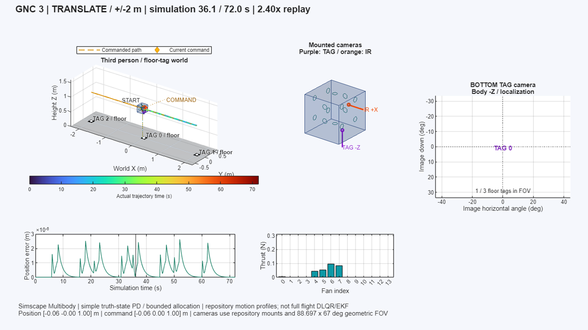

Story 1 · State estimation
Yaw aligned. Roll still disagreed.
Hanging tests exposed a camera/IMU frame mismatch. A two-state Kalman test for yaw and body-rate bias isolated the transient before testing returned to all three axes.
Home / Selected work / Part 01
Mechanical controls
From a control command to a physical response.
Simulated tag-camera view · 2 s NO FIX gapHover to play · click to enlarge
Six commanded flight profiles and synchronized healthy-versus-fault replays on a validated 2.7 kg Simscape Multibody plant.

Watch the six fan profiles and fault comparisons →Every request passes two checks: do the sensor frames agree, and can fourteen thrusters produce the force and torque?


Simulation evidence for each flight mode lives in the full study: Localization-aware mission design ↗
Video, muted · 13 sHover to play · click to enlarge
Video, muted · 13 sHover to play · click to enlarge
Video, muted · 12 sHover to play · click to enlarge
Video, muted · 12 sHover to play · click to enlarge
Story 1 · State estimation
Hanging tests exposed a camera/IMU frame mismatch. A two-state Kalman test for yaw and body-rate bias isolated the transient before testing returned to all three axes.
Story 2 · Actuation
Some requests fell outside the thrusters' feasible wrench envelope. Flooring negative fallback commands could leave zero output, so requests were scaled toward feasible commands.
Story 3 · Wireless actuation
I ran the reaction-wheel controller on an ESP32 over UDP and logged every DShot command. The negative half of the PID-to-DShot mapping ran backwards, so an output of −1 sent 1047. I reproduced it offline and wrote a corrected mapping that still needs a bench test.
Story 4 · Communication links
I moved the ESP32 link from USB serial to MQTT over TCP, then to raw UDP. On the full vehicle, Wi-Fi reached a 30% packet drop, so I moved the links to wired USB serial with a 15 ms median camera-to-throttle latency.
Video, mutedHover to play · click to enlarge
The ORBES cube hangs from an overhead line so it can turn freely in yaw. Its IR camera finds the brightest blob in each frame, and the bearing is that blob's angle from the image center, with the shaded band marking the image edge. When the beacon sits outside the center 10% of the frame, the controller drives the X-face motors in opposing pairs to turn the cube toward it, which is the stepped command in the bottom trace. The yaw trace shows the cube swinging past the beacon and back, and the red marks show the frames where the beacon left the view.
Video, muted · onboard logHover the video or press Play · click the video to enlarge
Screen recording, mutedHover to play · click to enlarge
ROS2 data path and data acquisition
The run logs also caught what the live view missed. In one IR tracking run only one of the two ESP32 motor links connected, and 1,352 commands to the other failed while the run carried on. A run should not start until every motor link answers.
General notes
My work covered fan-platform GNC architecture, reaction-wheel PID control, ROS2 simulation and data acquisition, motor PCB commissioning, EKF, avionics and VIO integration. Ed advised on some EKF tuning weights.